The core features of JavaScript that are introduced in this chapter are the syntax rules to which your scripts must adhere and the basic constructs used to store data and manipulate flow control. Once you understand the basic language mechanics, more advanced features can be tackled somewhat independently, without getting bogged down in myriad details. C, C++, and Java programmers will find JavaScript’s syntax familiar and should be able to quickly pick up its general syntax but are duly warned not to underestimate the language’s more advanced features. This chapter is introductory and is meant to provide a quick overview of all of JavaScript’s core features. Most of the topics will be explored in much greater depth in the chapters to follow.
Large groups of people sharing a common interest or goal accomplish one thing at the very least: they develop jargon. After spending any significant period of time working with computers, one cannot help but notice that software engineers are particularly fond of the language they use to communicate ideas about programming. The terms employed for discussing programming languages offer a technical vocabulary with which specific ideas can be communicated clearly and concisely.
Here we introduce some programming language terminology that will be used throughout the book. Table 2-1 provides precise definitions for concepts that are often only vaguely understood.
Table 2-1 Common Programming Language Terms
JavaScript code found in HTML documents is interpreted line by line as it is read top to bottom. As such we should declare code structures like variables and functions before attempting access. Because of this standard execution order, we generally place some code for initial read; for example, in Web documents we might place script references in the <head> tag. However, we will see that because of the sequential and generally blocking nature of JavaScript for Web page load, this can be problematic. See Chapter 18 for a brief discussion about execution and load order as it relates to performance.
JavaScript is case-sensitive. This means that capital letters are distinct from their lowercase counterparts. For example, if you use the identifiers result, Result, and RESULT in your script, each identifier refers to a separate, distinct variable. Case sensitivity applies to all aspects of the language: keywords, operators, variable names, event handlers, object properties, and so on. All JavaScript keywords are lowercase, so when using a feature such as an if statement, you need to make sure you type “if” and not “If” or “IF.” Because JavaScript uses the “camel-back” naming convention, many methods and properties use mixed casing. For example, the M in the name of the lastModified property of the Document object (document.lastModified) must be uppercase; using a lowercase m (document.lastmodified) will retrieve an undefined value.
The primary implication of case sensitivity is that you should pay close attention to capitals when defining and accessing variables, when using language constructs such as if and while, and when accessing properties of objects. One typo can change the meaning of your whole script and require significant debugging effort.
The fact that JavaScript is commonly embedded directly in HTML can lead to some confusion. Under HTML, element and attribute names are case-insensitive. For example, the following two tags are equivalent:
This is not a problem in itself. The problem comes when novice programmers see HTML event handlers referenced in two different ways (like ONCLICK and onClick in the previous example) and assume event handlers can be accessed similarly in JavaScript. This is not the case. The corresponding event handler in JavaScript is onclick, and it must always be referred to as such. The reason that ONCLICK and onClick work in HTML is that the browser automatically binds them to the correct onclick event handler in JavaScript.
To further illuminate the distinction, consider the following two tags, which are not equivalent:
The reason they are not equivalent is that the first modifies the variable x, while the second modifies X. Because JavaScript is case-sensitive, these are two distinct variables. This illustrates an important aspect of HTML attributes: while the attribute name is not case-sensitive, its value may be. The onclick HTML attribute is not case-sensitive and so may be written onClick, ONCLICK, or even oNcLiCk. However, because the value to which the onclick attribute is set contains JavaScript, you must remember that it is case-sensitive.
It should be noted that XHTML requires that element and attribute names be written in lowercase. In contrast, older traditional SGML forms of HTML and now HTML5 are not case-sensitive in this way. Given the changes and the fact that we went from standards okay with case variability to then not, and now back, we suggest picking a case style and sticking to it. In our view, we strongly suggest lowercasing the tags and attributes (especially event handlers) of the HTML in which your scripts are embedded. Since JavaScript is case-sensitive, you should be a bit careful not to revert to sloppy case handling lest errors creep into your code, markup, style, or the interaction between the three.
Whitespace characters are those characters that take up space on the screen without any visible representation. Examples include ordinary spaces, tabs, and linebreak characters. Any sequence of excessive whitespace characters is ignored by JavaScript. For example:
is the same as:
This suggests that the use of whitespace is more for the benefit of the programmer than the interpreter. Indeed, thoughtful use of whitespace to offset comments, loop contents, and declarations results in more readable, and hopefully, understandable code.
NOTE Because of JavaScript’s ambivalence to whitespace and most Web users’ frustration with slow download times, some JavaScript programmers choose to “compress” their scripts by removing excess whitespace characters. This practice is generally a part of minification, discussed in Chapter 18.
The spacing between tokens can be omitted if the meaning is unambiguous. For example:
contains no spaces but is acceptable because its meaning is clear. However, most operations other than simple arithmetic functions will require a space to indicate the desired meaning. Consider the following:
The first statement invokes the typeof operator on a variable x and places the result in s. The second copies the value of a variable called typeofx into s. One space changes the entire meaning of the statement.
As a rule, JavaScript ignores extra whitespace—but there are exceptions. One is in strings. Whitespace will be preserved in any string enclosed in single or double quotes:
Experienced programmers might wonder what happens if you include a linebreak directly in a string. The answer involves another of the subtleties of whitespace and JavaScript: implicit semicolons.
Statements are the essence of a language like JavaScript. They are instructions to the interpreter to carry out specific actions. For example, one of the most common statements is an assignment. Assignment uses the = operator and places the value on the right-hand side into the variable on the left. For example:
adds 10 to y and places the value in x. The assignment operator should not be confused with the “is equal to” comparison operator ==, which is used in conditional expressions (discussed later in the chapter). One key issue with statements in a programming language is indicating how they are terminated and grouped.
A semicolon indicates the end of a JavaScript statement. For example, you can group multiple statements on one line by separating them with semicolons:
You can also include more complicated or even empty statements on one line:
This example increments x, skips past two empty statements, sets x to zero if x is greater than 10, and finally decrements y. As you can see, including multiple statements on one line is rather unwieldy if worked on directly and as such should be avoided. However, code condensing like this via white space reduction and other techniques is the standard result of minification, which is useful for reducing script size for optimal delivery online.
Although statements should be followed by semicolons, they can be omitted if your statements are separated by a line break. For example:
is treated as:
Of course, if you wish to include two statements on one line, a semicolon must be included to separate them:
The formal rules for implicit semicolon insertion are a bit more complex than the preceding description would lead you to believe. In theory, tokens of a single statement can be separated by a line break without causing an error. However, if the tokens on a line without a semicolon comprise a complete JavaScript statement, a semicolon is inserted even if the next line could plausibly be treated as an extension of the first. The classic example is the return statement. Because the argument to return is optional, placing return and its argument on separate lines causes the return to execute without the argument. For example:
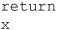
is treated as:
rather than what was probably intended:
Relying on implicit semicolon insertion is a bad idea, and poor programming style to boot. This practice should be avoided.
Curly braces “{ }” are used to group a list of statements together. For example, the statements that make up the body of a function are enclosed in curly braces:
If more than one statement is to be executed as the result of a conditional or in a loop, the statements are similarly grouped:
Regardless of whether they are used singularly or within groups, statements generally need to modify data, which is often in the form of a variable.
A variable stores data. Every variable has a name, called its identifier. Variables are declared in JavaScript using var, a keyword that allocates storage space for new data and indicates to the interpreter that a new identifier is in use. Declaring a variable is simple:
This statement tells the interpreter that a new variable x is about to be used. Variables can be assigned initial values when they are declared:
In addition, multiple variables can be declared with one var statement if the variables are separated by commas:
You should not use variables without first declaring them, although it is possible to do so in many cases. In JavaScript, variables are either in the global scope or the local scope. Variables declared within a function belong strictly to that function and cannot be accessed outside of that scope. Variables declared outside of a function are global to the application. However, if a variable is used without a var declaration, even inside of a function, that variable will belong to the global scope. We advise you to always declare variables first so that there is no confusion to the variables scope.
Experienced programmers will notice that, unlike C, C++, and Java, that type of information is missing in JavaScript during declaration. This foreshadows that JavaScript’s treatment of variable data types is fundamentally different from these languages.
Every variable has a data type that indicates what kind of data the variable holds. There are five basic data types in JavaScript, and they are shown in Table 2-2.
Table 2-2 JavaScript’s Primitive Data Types
All these data types as well as the details of special characters are discussed in Chapter 3. However, one aspect of JavaScript data types should be briefly mentioned in this overview: weak typing.
A major difference between JavaScript and other languages you might be familiar with is that JavaScript is weakly typed. Every JavaScript variable has a data type, but the type is inferred from the variable’s content. For example, a variable that is assigned a string value assumes the string data type. A consequence of JavaScript’s automatic type inference is that a variable’s type can change dynamically. For example, a variable can hold a string at one point and then later be assigned a Boolean. Its type changes according to the data it holds. This explains why there is only one way to declare variables in JavaScript: there is no need to indicate type in variable declarations.
Being weakly typed is both a blessing and a curse for JavaScript. While weak typing appears to free the programmer from having to declare types ahead of time, it does so at the expense of introducing subtle typing errors. For example, given the following script that manipulates various string and number values, we will see type conversion cause potential ambiguities:
The output of this example when included in an HTML document is shown here:
Notice in particular how, in the case of addition, the result was a string “55” rather than a number 10, while in the other examples the string was converted to a number before output. The reason the addition didn’t work is that the plus sign is an overloaded operator that serves two meanings, both as addition and as string concatenation.
Type conversion is automatically carried out in JavaScript. Table 2-3 shows the common conversion rules when data is automatically converted to one type or another. Automatic conversion happens very often when using relational operators discussed later in the section. Type conversion and its subtleties are discussed in more detail in Chapter 3.
Table 2-3 Type Conversions in JavaScript

Fortunately, there are many ways to convert data predictably in JavaScript using methods like parseInt() and parseFloat() amongst other schemes. These methods are shown in Table 2-4.
Table 2-4 Type Conversion Methods
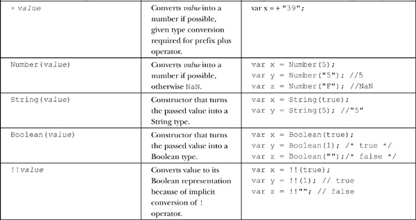
Given that it may be unclear what the type of a given value is, you may need to employ the typeof operator.
Also, be aware that implicit type conversion can lead to lots of confusion. For example,
indicates that the two values are equivalent. If you are looking for explicit checking of type and value, you will need to use the === and !== operators, discussed later. Because of the potential for run-time type errors, explicit conversion is simply more appropriate for safe programming.
Composite types are collections of primitive types into some larger structure. In JavaScript, the most generic composite type from which all other composite types are derived is the object.
In JavaScript, an object is an unordered set of properties that may be accessed using the dot operator:
For example:
might be used to access the name property of an object called myDog. Equivalently, this can be represented in an associative array format:
So the same example in this case would be:
Generally, the two formats are equivalent, but when accessing properties with spaces in them or doing some forms of loop, the associate array format may be easier to work with.
In the case where we are accessing an object’s property and it is a function, more appropriately called a method, it may be invoked as:
For example, myDog might have a method bark() that could be called like so:
Objects are created using the new operator in conjunction with a special constructor function.
For example, here we create a new Date object that is built into ECMAScript:
Constructor functions are, by convention, named in uppercase and can be user defined. This shows an example of creating a simple object Dog with one property and method.
Besides constructing objects with new, it is also possible that an object literal may be used with the following syntax:
For example:
Object literals are quite important in JavaScript today as they are being co-opted to create a namespace-like wrapper around various user-defined variables and functions. For example, given:
you would wrap the values and functions within an object literal, like so:
and avoid polluting the shared global namespace with many identifiers.
Once an instance of an object is created, setting properties is similar to a standard assignment:
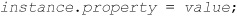
and they can be accessed using the standard dot (‘.’) operator. For example, after creating a simple object, we might just add a new property to it:
Despite what some people think, JavaScript is an object-oriented programming language—it just doesn’t use the magic word “class,” at least not in the current 1.x generation of the language. As a prototypical-based OOP language, we can add to constructors on the fly. For example, we can extend Dog to have a sit() method now:
So our created objects now have this feature:
You can use prototypes to create basic inheritance. For example:
Using this idea, it is possible to add prototypes to built-in objects and even overwrite any methods or properties. This is both a powerful but sometimes dangerous aspect of JavaScript.
The this statement refers to the “current” object; that is, the object inside of which this is invoked. Its syntax is:
It is typically used inside of a function (for example, to access the function’s length property) or inside of a constructor in order to access the new instance being created:
Commonly it is used to shortcut object reference paths. For example, in this markup fragment you might use document.getElementById (“field1”) in the onblur handler, but this is much more concise:
Used in the global context, this refers to the current Window.
Now we can certainly make objects for use in our scripts, but often the value of a language comes from its “library”—in other words, the objects, methods, and so on available to us. The core ECMAScript specification does define a core number of objects, as listed in the overview in Table 2-5 and presented in detail primarily in Chapter 7. These objects are part of the language itself, as opposed to host objects that are provided by the executing environment.
Table 2-5 Native Objects Defined by ECMAScript
What many people consider JavaScript is not actually JavaScript but instead consists of the constructs provided by the environment in which the language is hosted. For example, window, document, and navigator are a number of objects you find in client-side JavaScript in a browser that serves as the host environment. In server-side JavaScript, your host environment might provide objects such as fs, querystring, and url. In this book, we’ll focus generally on client-side JavaScript, but the core language concerns will be transferable regardless of host environment. Chapter 9 and beyond will present most of the information on the host objects of browser-based Web development.
JavaScript arrays are quite similar to objects, as we have alluded to a bit already, but they aren’t full types of their own. For example, you won’t be able to do a typeof on a variable that is an array and get confirmation that it is such a structure.
The array literal definition is similar to many languages using the following syntax (the brackets are “real” brackets and do not indicate optional components):
Each elementN is optional, so you can use an array with “holes” in it; for example:
You can also use the Array() constructor:
If only one numeric argument is passed, it is interpreted as the initial value for the length property; however, we stress the word initial. In JavaScript, it is easy to grow arrays simply by adding values. It is not necessary to reallocate memory or redeclare the array.
JavaScript arrays are zero base indexed, so
would set the value at the first index of the array to the string literal “First in.” Access is the same using a numeric index.
To get the defined length of the array, use the length property:
We might use this property to set the final item of the array:
Arrays do not have to be indexed solely numerically. We can also use textual keys. For example:
However, when arrays are utilized in this manner, they perform slightly differently from numerically indexed arrays. In this case, it is not possible to get the length of the array through the length property, and it is not possible to loop through the array with a standard for loop. However, it is possible to loop through the array using the for…in loop.
This reminds us again of the close relationship between arrays and objects in JavaScript. Object properties can be accessed not only as objectName.propertyName but as objectName [“propertyName” ]. However, this does not mean that array elements can be accessed using an object style; arrayName.0 would not access the first element of an array. Arrays are not quite interchangeable with objects in JavaScript.
Arrays will be discussed in depth in Chapters 3 and 7, which will expose the reader to the numerous methods for array manipulation.
Functions end up being classified as composite types as well. Generally, we do not think of them this way, as we usually encounter function literals employing the following syntax:
where args is a comma-separated list of identifiers for the function arguments, and statements is zero or more valid JavaScript statements. Function literals are often found in constructors:
or when binding them to event handlers:
or performing other higher-order programming tasks.
As a composite type like any other, you do not have to create functions solely as literals; for example, you can also use the Function() constructor:
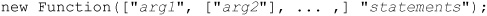
The argNs are the names of the parameters the function accepts, and statements is the body of the function. For example:
In fact, functions like these other data types are first class data objects. We can use them in expressions, as we did above, and even assign them and use them as values:
We will explore functions in depth in Chapter 5.
Regular expression literals (actually RegExp literals) have the following syntax:
where exp is a valid regular expression and flags is zero or more regular expression modifiers (for example, “gi” for global and case-insensitive).
Although not strictly a literal, you can use the RegExp() constructor inline in JavaScript:
JavaScript regular expressions are quite powerful, and full details on this topic can be found in Chapter 8.
Expressions are an important part of JavaScript and are the building blocks of many JavaScript statements. Expressions are groups of tokens that can be evaluated; for example,
is an assignment statement that takes the expression 3+3 and puts the result in the variable x. Literals and variables are the simplest kinds of expressions and can be used with operators to create more complex expressions.
Arithmetic operators operate solely on numbers, with one exception, +, which is overloaded and provides string concatenation as well. Table 2-6 details the arithmetic operators found in JavaScript.
Table 2-6 Arithmetic Operators
While JavaScript does not allow for standard C-like memory access, it does include bitwise operators. Bitwise operators operate on integers in a bit-by-bit fashion. Most computers store negative numbers using their two’s complement representation, so you should exercise caution when performing bit operations on negative numbers. Most uses of JavaScript rarely involve bitwise operators, but they are presented in Table 2-7 for those so inclined to use them.
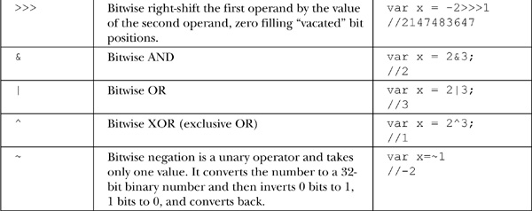
Assigning a value to a variable is performed using the = operator. There are a number of shorthand notations in JavaScript that allow you to perform simple arithmetic or bitwise operations and assign the new value at the same time. These operators are shown in Table 2-8.
Table 2-8 Binary and Self-Assignment Bitwise Operators
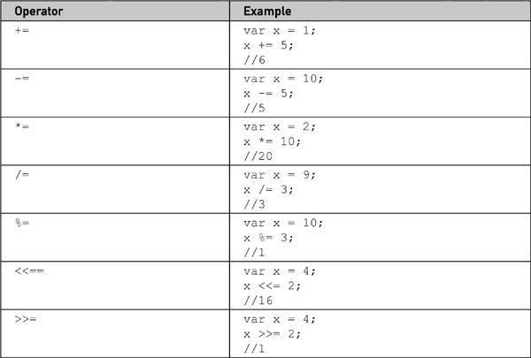
Logical operators operate on Boolean values and are used to construct conditional statements. Logical operators are short-circuited in JavaScript, meaning that once a logical condition is guaranteed, none of the other subexpressions in a conditional expression are evaluated. They are evaluated left to right. Table 2-9 summarizes these operators.
The conditional operator is a ternary operator popular among C programmers. Its syntax is
where expr1 is an expression evaluating to a Boolean and expr2 and expr3 are expressions. If expr1 evaluates true, then the expression takes on the value expr2; otherwise, it takes on the value expr3. The operator has gained some popularity in JavaScript, serving as a compact simple conditional often used in feature detection.
Type operators generally operate on objects or object properties. The most commonly used operators are new and typeof, but JavaScript supports a range of other type operators as well, as summarized in Table 2-10.
Table 2-10 Type-Related Operators
We previously covered the type operators used for property access and remind you that to access a property aProperty of an object object, the following two syntaxes are equivalent:
Note again that the brackets are “real” brackets and do not imply an optional component.
The comma operator allows multiple statements to be carried out as one. The syntax of the operator is
The comma is commonly used to separate variables in declarations or parameters in function calls. However, while uncommon if this operator is used in an expression, its value is the value of the last statement:
Relational operators, as detailed in Table 2-11, are binary operators that compare two like types and evaluate to a Boolean, indicating whether the relationship holds. If the two operands are not of the same type, type conversion is carried out so that the comparison can take place. (See the section immediately following for more information.)
Table 2-11 Relational Operators
A JavaScript implementation should carry out the following steps in order to compare two different types:
1. If both of the operands are strings, compare them lexicographically.
2. Convert both operands to numbers.
3. If either operand is NaN, return undefined (which, in turn, evaluates to false when converted to a Boolean).
4. If either operand is infinite or zero, evaluate the comparison using the rules that +0 and –0 compare false unless the relation includes equality, that Infinity is never less than any value, and that –Infinity is never more than any value.
5. Compare the operands numerically.
NOTE Using the strict equality (===) operator on operands of two different types will always evaluate false, and using the strict inequality (!==) on two different types will always evaluate true.
The lexicographic comparisons performed on strings adhere to the following guidelines. Note that a string of length n is a “prefix” of some other string of length n or more if they are identical in their first n characters. So, for example, a string is always a prefix of itself.
• If two strings are identical, they are equal. (Note that there are some very rare exceptions when two strings created using different character sets might not compare equal, but this almost never happens.)
• If one string is a prefix of the other (and they are not identical), then it is “less than” the other. (For example, “a” is less than “aa.”)
• If two strings are identical up to the n th (possibly 0th) character, then the (n + 1)st character is examined. (For example, the third character of “abc” and “abd” would be examined if they were to be compared.)
• If the numeric value of the character code under examination in the first string is less than that of the character in the second string, the first string is “less than” the second. (The relation “1” < “9” < “A” < “Z” < “a” < “z” is often helpful for remembering which characters come “less” than others.)
JavaScript assigns a precedence and associativity to each operator so that expressions will be well defined (that is, the same expression will always evaluate to the same value). Operators with higher precedence evaluate before operators with lower precedence. Associativity determines the order in which identical operators evaluate. We use the symbol to specify an arbitrary operator, so given the expression:
a left-associative operator would evaluate
while a right-associative operator would evaluate
Table 2-12 summarizes operator precedence and associativity in JavaScript.
Table 2-12 Precedence and Associativity of JavaScript Operators
This is but the quickest summary of JavaScript expressions; more details and a full discussion can be found in Chapter 4.
Statements execute in the order they are found in a script. In order to create useful programs, it is usually necessary to employ flow control, code that governs the “flow” of program execution. JavaScript supports conditionals such as if/else and switch/case statements that permit the selective execution of pieces of code.
JavaScript supports the common if conditional, which has numerous forms:
An example if statement is demonstrated here:
Given the verbosity of a nested if statement, JavaScript, like many languages, supports the switch statement, whose syntax is:
A simple switch statement is shown here:
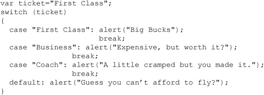
The break statement is used to exit the block associated with a switch, and it must be included to avoid fall-through for the various cases that may be unintended. Omission of break may be purposeful, however, as it allows for the easy simulation of an “or” condition. We will see that a break statement is also commonly used within loops, which are discussed next.
It is often necessary to iterate a number of statements until a particular condition is true. For example, you might wish to perform the same operation on each element of an array until you hit the end of the array. Like many other languages, JavaScript enables this behavior with loop statements. Loops continue to execute the body of their code until a halting condition is reached. JavaScript supports while, do/while, for, and for/in loops. An example of a while loop is
This loop increments x continuously, while its conditional, x less than 10, is true. As soon as x reaches value 10, the condition is false, so the loop terminates and execution continues from the first statement after the loop body, as shown here:
The do/while loop is similar to the while loop, except that the condition check happens at the end of the loop. This means that the loop will always be executed at least once unless a break statement is encountered first.
The same loop written as a for loop is slightly more compact because it sets the loop variable, condition check, and increment all in a single line, as shown here:
One interesting variation of the for loop is the for/in construct, which is useful for enumerating the properties of an object:
This simple example here shows for/in being used to print out the properties of a browser’s window.navigator object:
We’ll see a number of nuances as we enumerate objects, and we’ll need to be careful to understand what properties are defined within versus inherited in a particular object. We’ll also see that some objects will not be able to be enumerated, while others will enumerate properties and methods, and some just properties. A discussion of object enumeration can be found in Chapters 4 and 6.
JavaScript also supports statements generally used to modify flow control, specifically break and continue. These statements act similarly to the corresponding constructs in C and are often used with loops. The break statement will exit a loop early, while the continue statement will skip back to the loop condition check. In the next example, which writes out the value of x starting from 1, when x is equal to 3 the continue statement continues the loop without printing the value. When x is equal to 5, the loop is exited using the break statement.
Statements can be labeled in JavaScript using a valid identifier followed by a colon like so:
Jump to labeled statements in a block using either of the following:

Otherwise:
• break exits the loop, beginning execution following the loop body.
• continue skips directly to the next iteration (“top”) of the loop.
The following shows a simple example of the use of these statements:

All forms of statements including flow control and looping are discussed in detail in Chapter 4.
The ability to perform input and output (I/O) is an integral part of most languages. The JavaScript language itself does not contain any functions for simple input and output. However, JavaScript is often executed in a host environment like a Web browser, which does provide facilities for this. We present some of this briefly here as we have used some already to illustrate script output.
Input-output, like most useful tasks in JavaScript, is carried out through the objects provided by the browser. For example, if we wanted to simply display a quick dialog to show a message, we might use the alert() method of Window, which displays its argument message in a dialog box that includes an OK button. For example:
causes the following dialog box to be presented to the user:
Instead we may wish to output to a debugging console. In most browsers we should be able to use console.log():
to write a trace statement.
Most browsers should also support console.warn() and console.error(), both of which take string arguments:
Another common form of interaction is through the Document object. This object provides many ways to manipulate Web pages, the simplest of which are the write() and writeln() methods. The write() method writes its arguments to the current document. The writeln() method is identical, except that it inserts a line break after writing the argument. For example:

The reason you might not notice any difference if you try this example is that JavaScript outputs to HTML. Recall from Chapter 1 that the intersection between the two languages can provide some frustration for programmers. HTML collapses all newline characters, so a newline won’t make any difference at all in output. This feature probably explains why most JavaScript programmers tend to use document.write() instead of document.writeln(). If you set white-space rules in HTML with a <pre> tag or with the CSS white-space property, you will see that newlines are indeed introduced.
Using the document.write() method is only useful as a document is being rendered. If you issue the message after a page is painted, it will reopen the document and remove the existing content. Generally, after page load you should employ DOM methods for outputting information into the document. For example, imagine that you had a <div> tag that was to contain some message with an id of outputDiv:
Later you might modify the content of that tag by setting the element’s innerHTML property like so:
This will literally rewrite the HTML of the document so it looks like this:
which you will also see if you inspect the source tree:
There are many methods beyond this quick and dirty use of the innerHTML property to write messages into an HTML document. This topic is covered in depth in Chapters 9 and 10.
Reading information from a user, in other words taking input, also has two methods. For example, a simple window.prompt() could be used to collect a string of data from the user:
However, more likely you might read the contents of an HTML form field using DOM methods. For example, if we had an HTML form field like this:
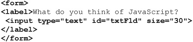
we might then find the field of interest by its id attribute and read the value in the field:
We could then tie this together with a simple event trigger such as a button press and take the data read and put it back into the document, as we previously demonstrated. A simple example is shown here and in Figure 2-1.
ONLINE http://javascriptref.com/3ed/ch2/simpledom.html
Figure 2-1 Very simple complete DOM example
The briefest example shown here begins to demonstrate clearly what makes JavaScript challenging—its intersection with HTML, and eventually CSS. In addition, we can collect the results of the user’s actions and send them silently back to the server via Ajax. We will spend a significant amount of time on these topics from Chapter 9 onward. As we do we will see that we need to write larger scripts, and to do so will require the use of larger coding constructs such as objects or functions, which are discussed next.
Currently, the function serves as the main approach to encapsulating flow logic in JavaScript for programming in the large. The general syntax of a function is
From within a function you can return a value using the return statement:
If expression is omitted, the function returns undefined. A small example is shown here:
JavaScript’s parameter passing for functions can be troubling since it is dependent on the data type passed. Primitive types are passed to functions by value. Composite types are passed by reference.
Functions have their own local scope. Static scoping is employed. You can nest functions creating an inner function. For example, in the following code fragment, small1() and small2() are local to the function big() and are only callable from within it:
Invocation with inner functions can get a bit tricky. This idea is called a closure. Basically, the states of variables are bound up during the creation of an inner function so that the function carries around its environment until it wakes up later on. This is especially useful with timers or asynchronous events such as Ajax calls. A brief example illustrates the idea:
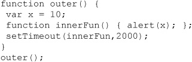
In this case, the inner function innerFun() prints out the variable x, which is local to outer(). However, by the time it wakes up from the timeout two seconds later, the variable x should be unbound since the function has exited. Given that JavaScript implements this as a closure, the value is 10.
Interestingly, if after the timeout was defined we decided to set x to 20, that would be the bound value later on:
If closures confuse you, as they do many developers, you may want to consult Chapter 5, which has a more in-depth discussion of them.
As previously mentioned, when discussing data types, functions are first class data objects in JavaScript, so they can be assigned:
They also can be used in place as literals. For example, here we define a function inline and pass it to a sort() method for arrays:
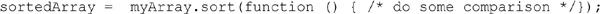
It is also possible to define functions using an object style with new and the Function() constructor:
Given that they are objects like everything else, there are a variety of useful properties you might explore. For example, you can check how many arguments a function expects by accessing its length property:
The argument values, in addition to being placed in the declared parameters upon invocation, are accessible via the arguments[] array. This array holds the actual values passed to the function, so it may hold a different number of arguments than the function expects. With such a feature, you can define variable argument functions that can work with arbitrary amounts of passed data.
In summary of this brief discussion, we see that JavaScript functions are quite flexible and powerful. A full discussion of functions can be found in Chapter 5.
Outside of a function or object, variables are within the global space whether explicitly defined with var or not. Within a function or object, if the var statement is used, the defined variable will be local to the construct; without the statement, it will be global. The following code fragment shows these possibilities:
Commonly, JavaScript developers make assumptions about scoping rules with var that aren’t quite true. For example, a var statement found within a for loop does not scope that value to the loop. In this case, j is scoped to either the function it is within or to the global space if it is outside a function or an object.
Further, within a block, a var statement does nothing different than it would otherwise:

Under some variants of JavaScript—JavaScript 1.7+, for example—we see the introduction of the let statement, which makes things a bit more complicated. You can locally bind values to the scope of a let statement and accomplish exactly the two aforementioned ideas:
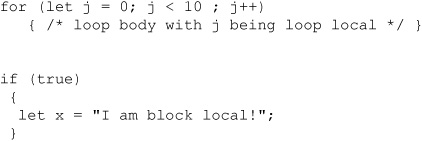
If this construct is a guide, JavaScript is changing in some fairly fundamental ways. Unfortunately, we have inconsistent support in browsers, and many of these features are not actually part of the accepted specification. We focus here on a quick tour of the language and only present this idea to illustrate a common misunderstanding. Don’t worry, though, Chapters 3 through 6 will cover a number of the more esoteric and emerging parts of JavaScript in some detail.
A very powerful feature of JavaScript is its support for regular expressions. A regular expression can be created as an object using the RegExp() constructor.
This also could have been defined using a regular expression literal:

Once a regular expression is defined, we can use it to pattern-match and potentially change strings. The following simple example matches a piece of the string in the variable geographicLocation and substitutes it for another string:

The result of this script is shown here:
JavaScript’s implementation of regular expressions is extremely powerful and very similar to Perl’s, so many programmers should be immediately comfortable with JavaScript’s regular expression facilities. More information on regular expressions can be found in Chapter 8.
You can catch programmer-generated and runtime exceptions, as shown in Table 2-13, but you cannot catch JavaScript syntax errors, though you may handle them in some browsers using window.onerror.
Table 2-13 JavaScript Exceptions
You can invoke exceptions directly using throw.
The value can be any value but is generally an Error instance.
Exceptions can be handled with the common try/catch/finally block structure:
The try block must be followed by either exactly one catch block or one finally block (or one of each). When an exception occurs in the catch block, the exception is placed in e and the catch block is executed. The finally block executes unconditionally after try/catch. We show a brief example in the context of trying different schemes to address cross-browser Ajax differences by trying various different approaches sequentially and catching any thrown errors.
Exception-handling addresses style as well as syntax. We’ll now make a brief introduction to another syntax style–related topic—commenting—though we leave the bulk of the practices of JavaScript coding for Chapter 18.
Finally, a very important aspect of good programming style is commenting your code. Commenting allows you to insert remarks and commentary directly in source code, making it more readable to yourself and others. Any comments you include will be ignored by the JavaScript interpreter.
Comments in JavaScript are similar to those in C++ and Java. There are two types of comments:
• Single-line comments starting with //:
These run to the end of the current line only.
• Multiline comments wrapped in /* and */:
The following example illustrates both types of comments:
Note that you cannot nest multiline comments like so:
We point out that commenting is encouraged for a variety of reasons, including license inclusion, explanatory messages, and documentation generation, but is also removed from delivered code for performance and security concerns. We will elaborate on these style and practice concerns for JavaScript and comments in Chapter 18.
At the time of this writing, ECMAScript 5 has been embraced, and the most modern browsers mostly, if not fully, implement the new JavaScript features it entails. It is important to note that many of these features will not work at all in previous versions of JavaScript. Fortunately, we note that almost every part of this new edition of JavaScript is able to gracefully degrade for older browsers, mostly through feature detection. If you’re wondering why we’re covering all of these language changes in a chapter devoted specifically to objects, you’ll see in a moment that some of the biggest changes coming in JavaScript relate to how programmers, objects, and their properties all interact.
We begin with what we hope is an obvious point, which is that when you start implementing these new language features in your code, you’re going to need to do feature detection and only use them for browsers that actually support them. Since most of them have no possible way to implement as a fallback in older JavaScript versions, you’ll either be able to use them or you won’t—no in between. As we’ve seen before, detecting the presence of an object’s property will likely be your best bet in “feature detecting” most of these various new JavaScript features. For example:
If you decide to move forward with ECMAScript 5, you may very much want to consider the use of strict mode. Strict mode is an opt-in mode that allows only a much stricter subset of JavaScript. You opt in to strict mode per execution context (that is, globally):
or you may opt to limit your use to just a particular function by having the first line be exactly and only the strict mode declaration, like this:
Briefly, strict mode will enforce the following rules:
• Assignment to previously undeclared variables is not allowed. In non-strict mode, assignment to an undeclared variable implicitly declares it in the global scope.
• Trying to delete things that cannot be deleted is not silent pass-by—it throws an error. For instance, variables declared with the var keyword cannot be deleted.
• eval cannot be reassigned, overridden, or used as a variable or property name, nor can it introduce new variables to the scope.
• Because with is seen as having many bad characteristics, it is not allowed under strict mode.
The most common case for using strict mode is when developing a new script, or especially for a new programmer, to keep the code to a safer path, with a higher likelihood of success.
There’s a new native object JSON that allows for the manipulation of JavaScript Object Notation (JSON) values, which are basically stringified JavaScript objects. Most important for this object are JSON.parse() and JSON.stringify(), which are used for converting a JSON string to an object, and an object to a JSON string, respectively. There are some extra convenience parameters as well, including being able to specify whitespace for the output of stringify(). A full discussion of the JSON format and the use of this new object can be found in Chapter 15, which covers Ajax.
Finally, adding natively to JavaScript what has long been one of the most useful utilities of many different JavaScript frameworks (namely, Prototype), functions can now natively be bound to a specific instance context. For instance:
Date objects can now convert to and from the ISO 8601 format:
This minor change is discussed in Chapter 7.
Array objects now have a number of new methods for manipulating array instances. Many have been implemented previous to the emergence of ECMAScript 5 in some browsers or frameworks. A brief list of ECMAScript 5 Array additions is shown here:

Coverage of each of these different methods is beyond the scope of this chapter, but a full discussion can be found in Chapter 7.
String objects now have a trim() method natively on them that trims off whitespace from both sides of a string value. This is discussed in Chapter 7.
Objects have several new properties and methods exposed. Most of these deal with functionality that used to be internal but is now exposed to the programmer. These are listed here and will be explained in detail in Chapter 6:

At the time of this book’s writing, ECMAScript 6 is in the works. Many features will work their way into the browsers before the specification’s release, and some of them have already been implemented in some browsers. The first interesting new feature is the let keyword. The let statement will allow us to declare variables to the block scope as opposed to solely a function or global scope. The yield keyword will support iterator generators. The next new feature is the addition of a const marker, which will set a variable to be a constant. In addition to these new keywords, functions will begin to allow default values on the parameters, and strings will be able to span multiple lines. There are even more changes, but some of these are questionable while others such as let and yield are already implemented in many browsers, just waiting for ubiquity for more use in client-side JavaScript.
This chapter provided a whirlwind tour of the basic features of JavaScript, a simple yet powerful Web-oriented scripting language most commonly used to develop browser-run scripts found in Web sites/applications. Most of the features of the language are similar to other languages such as C or Java. Common programming constructs such as if statements, while loops, and functions are found in the language. However, JavaScript is not a simplistic language and it does contain more advanced, and sometimes confused, features including weak type, functions as data types, prototype-based OOP, closures, well-integrated regular expressions, exception handling, and more. Unfortunately, much of what we concern ourselves with when studying JavaScript is not the language itself but the various host-based objects to interact with a Web browser or a loaded HTML document. Because of this, much of this book will be spent covering the use of these objects. Experienced programmers might wish to quickly skim the next few chapters, focusing on the subtle differences between JavaScript and other programming languages, so they can move on to the complexities of DOM programming. However, new programmers should carefully read the next five chapters in order to get a solid foundation to build on. The next chapter will focus on JavaScript’s data types, which can simplify writing scripts if the programmer is careful.